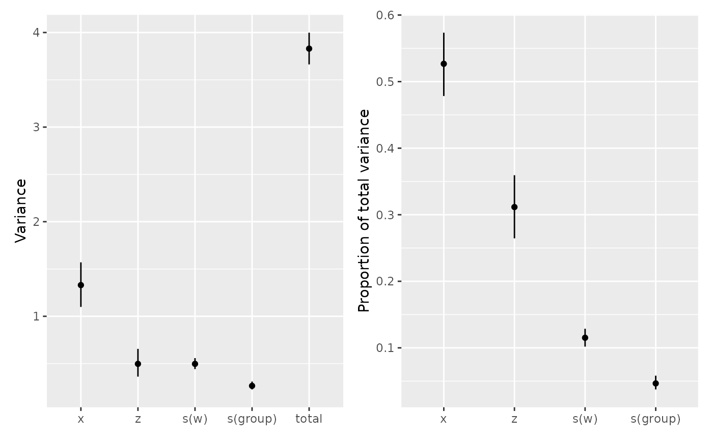
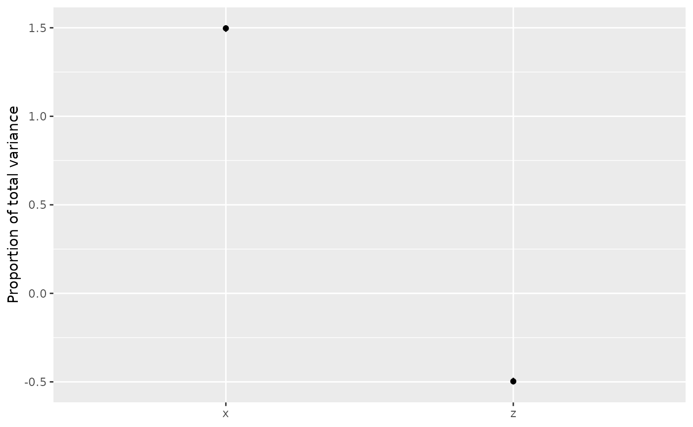

Variance components in GAMs
Source:vignettes/articles/variance-components.Rmd
variance-components.RmdThis example uses variance_comp() to compare penalty
variances with variances of fitted terms.
We simulate 360 observations in 12 groups of 30. The covariate
z is a noisy version of x, so the two are
positively correlated. We generate w independently for the
nonlinear effect.
library("mgcv")
library("gratia")
set.seed(2026)
dat <- data.frame(x = runif(360, -1, 1), w = runif(360),
group = factor(rep(seq_len(12), each = 30)))
dat$z <- 0.8 * dat$x + rnorm(360, sd = 0.2)The response combines positive linear effects of x and
z, a sine wave in w, differences between
groups and Gaussian noise. Every observation in a group shares the same
random intercept. Because the two linear effects tend to increase
together, their covariance will contribute to the total variance.
group_effect <- rnorm(12, sd = 0.6)
dat$y <- 2 * dat$x + 1.5 * dat$z + sin(2 * pi * dat$w) +
group_effect[dat$group] + rnorm(360, sd = 0.4)We fit linear terms for x and z, a smooth
for w and a random intercept for group. This
gives us both unpenalised terms and terms with penalties to compare:
Two kinds of variance
We first extract the penalty variances, which describe shrinkage of
the penalised coefficients. The .lower_ci and
.upper_ci columns give interval limits for standard
deviations:
vc_penalty <- variance_comp(model, type = "penalty")
vc_penalty
#> # A tibble: 3 × 5
#> .component .variance .std_dev .lower_ci .upper_ci
#> <chr> <dbl> <dbl> <dbl> <dbl>
#> 1 s(w) 139. 11.8 6.51 21.3
#> 2 s(group) 0.293 0.542 0.354 0.829
#> 3 scale 0.157 0.397 0.368 0.428Penalty variances are \phi /
\lambda_j: the model scale divided by the smoothing parameter. By
default, the calculation undoes the rescaling that mgcv
applies to penalties during fitting. Larger variances mean less
shrinkage of the coefficients affected by that penalty. A smooth can
have several penalties, each with its own row. Unpenalised terms such as
x and z are omitted. For this Gaussian model,
scale is the estimated residual variance.
With type = "terms", we instead measure how much each
term’s fitted values vary across the observations used to fit the model.
We use 1,000 coefficient draws for intervals and set a seed to make them
reproducible:
vc_terms <- variance_comp(model, type = "terms", n_draws = 1000, seed = 42)
vc_terms
#> # A tibble: 5 × 8
#> .component .variance .std_dev .lower_ci .upper_ci .proportion
#> <chr> <dbl> <dbl> <dbl> <dbl> <dbl>
#> 1 x 1.33 1.15 1.05 1.25 0.527
#> 2 z 0.497 0.705 0.602 0.810 0.312
#> 3 s(w) 0.497 0.705 0.665 0.747 0.115
#> 4 s(group) 0.265 0.515 0.477 0.557 0.0466
#> 5 total 3.83 1.96 1.91 2.00 1
#> # ℹ 2 more variables: .proportion_lower_ci <dbl>, .proportion_upper_ci <dbl>These are sample variances on the linear predictor scale, with each observation counted equally. The output includes parametric terms and one row for each smooth, regardless of how many penalties it has. It excludes intercepts, offsets and residual variation.
Totals and proportions
The variance of the sum depends on both the term variances and their covariances. Let f_j be term j’s fitted values, F = \sum_j f_j their sum, and C their covariance matrix. Then
\operatorname{Var}(F) = \sum_j C_{jj} + 2\sum_{j<k} C_{jk}.
We retrieve the covariance matrix stored in the result to compare the sum of term variances with the total, which includes covariance:
C <- attr(vc_terms, "covariance")
c(sum_of_term_variances = sum(diag(C)),
total_including_covariance = sum(C))
#> sum_of_term_variances total_including_covariance
#> 2.588591 3.829474To divide the total among terms, we split each covariance
contribution, 2C_{jk}, equally between
the two terms. Each term’s proportion is then p_j = \operatorname{Cov}(f_j, F) /
\operatorname{Var}(F). The individual terms’ proportions sum to
one. We check this using include_total = FALSE to omit the
total row and n_draws = 0 to skip interval
calculations:
vc_no_total <- variance_comp(model, type = "terms", include_total = FALSE,
n_draws = 0)
sum(vc_no_total$.proportion)
#> [1] 1Penalty intervals use uncertainty in the estimated smoothing
parameters and model scale. For term intervals, we draw all coefficients
together from their approximate Gaussian posterior distribution. We
recompute fitted values, variances and proportions for each draw,
preserving dependence between terms. By default, the smoothing
parameters stay fixed at their estimates.
unconditional = TRUE adjusts for their uncertainty when
that adjustment is available for the fitted model. The proportions from
each draw are in attr(vc_terms, "proportion_draws")$total.
Interval limits summarise each term separately and need not sum to
one.
Plotting
We plot variances, including the total, alongside proportions for the individual terms. Both plots show intervals, with terms on the x-axis:
patchwork::wrap_plots(
draw(vc_terms),
draw(vc_terms, type = "proportion", include_total = FALSE),
ncol = 2
)
Use draw(vc_penalty) for penalty variances or
draw(vc_terms, type = "std_dev") for term standard
deviations. draw() uses the stored intervals, squaring
standard deviation limits when plotting variances. Use
n_dodge = 2 to stagger term labels, angle = 45
to rotate them, or flip = TRUE to put terms on the
y-axis.
Negative proportions
To show how a proportion can be negative, we reuse the correlated
x and z but give their effects opposite signs.
The new response combines 2 * x - z with Gaussian noise of
standard deviation 0.1, so the two effects partly cancel each other:
We fit both linear terms and plot their proportions with intervals, omitting the total row:
opposing <- gam(contrast ~ x + z, data = dat, method = "REML")
vc_opposing <- variance_comp(opposing, type = "terms", n_draws = 1000, seed = 43)
draw(vc_opposing, type = "proportion", include_total = FALSE)
Their negative covariance reduces the variance of their sum.
Accounting for this covariance gives x a share of 1.5 and
z a share of -0.5. Proportions can therefore exceed one or
be negative. They are undefined (NA) when the total
variance is zero.